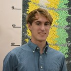

|
 |
Ian Snider |
|
Berkeley, CA 94720, USA iqsnider@berkeley.edu |
I work as a PhD student at UC Berkeley and the Lawrence Berkeley National Lab. I'm interested in robotics, autonomous field missions, control, and mapping. You can find my CV and GitHub here.
News
Drone-mounted gamma detector advances FUSRAP innovation, safety at Chambers Works